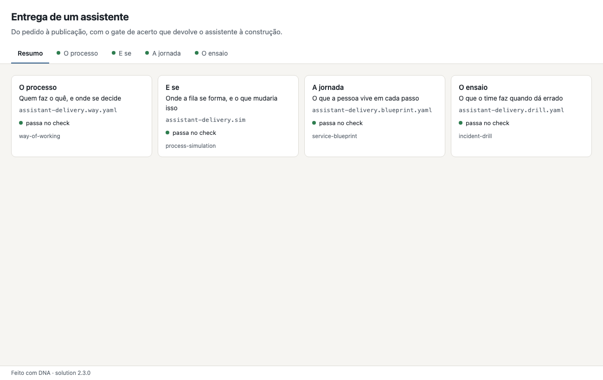
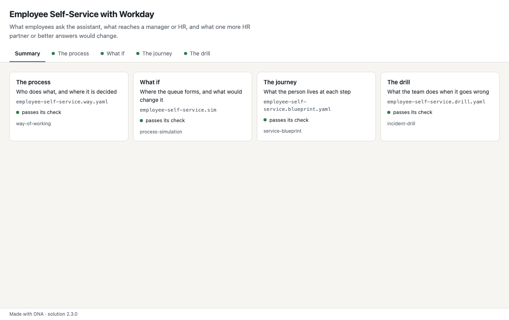
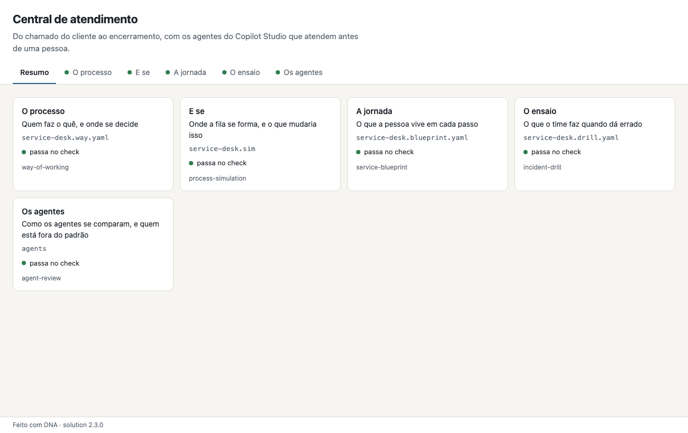

solution
A solution is one process seen by every skill: the way of working, the «what if» simulation, the customer's journey, the incident drill, the Copilot Studio agents. One short .solution.yaml names the pieces; one page shows them all, each drawn by its own skill. Start from one of these accelerators — every number in them is made up, to be replaced with yours.

Do pedido à publicação, com o gate de acerto que devolve o assistente à construção.
What employees ask the assistant, what reaches a manager or HR, and what one more HR partner or better answers would change.
Do chamado do cliente ao encerramento, com os agentes do Copilot Studio que atendem antes de uma pessoa.npx @ruinosus/dna solution --new service-desk my-desk npx @ruinosus/dna solution my-desk/service-desk.solution.yaml